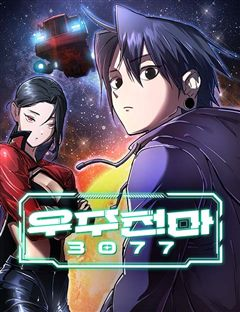
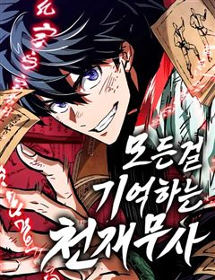
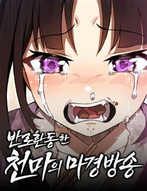
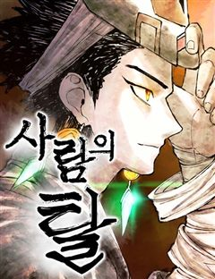
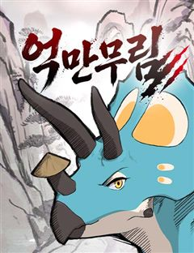
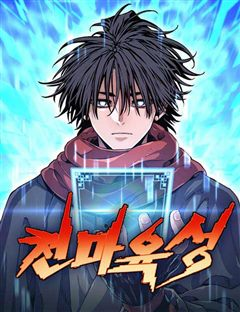

괴력 난신 같은 웹툰 추천
괴력 난신 · 매드버드 / 김태형 / 한중월야
괴력 난신 재밌게 봤다면 이 웹툰들도 좋아할 거예요. 같은 장르이면서 천마, 오컬트, 동양풍판타지 같은 요소가 겹치는 작품을, 겹치는 요소가 많은 순서로 20개 골랐어요.
2026-09-29 기준 · 네이버웹툰·카카오웹툰·레진코믹스 · 성인 작품 제외
내 취향으로 직접 골라 추천받기 →-
1
 네이버웹툰
네이버웹툰환생천마
철혈의 맹주, 강호의 절대자 '천하진'. 가문의 수치라 불리는 망나니 '벽리단'의 몸으로 깨어나다! 취미는 사기도박, 검은 창고에 박아둔지 오래. 하루아침에 천하제일인에서 천하의 쓰레기가 된 그는 다시 검을 잡고, 전생에서 이루지 못한 경지에 오르고…
천마동양풍판타지먼치킨판타지액션네이버웹툰에서 보기 → -
2

네이버웹툰우주천마 3077
오랜 세월이 흘러 태산에 봉인된 천마가 눈을 떴을 때, 이미 인류는 방사능에 절여진 지구를 떠나 은하를 누비고 있었다.
천마동양풍판타지먼치킨판타지액션네이버웹툰에서 보기 → -
3네이버웹툰
곤륜에 용이 산다
한때 구파일방 중 하나였던 곤륜파의 제자가 된 교하. 사제들과 함께 곤륜파를 재건하기 위해서 고군분투한다. 근데, 뭔가 좀 이상하다. 제자들이 거지에 산적, 사기꾼에 도둑 출신이라고? 이거… 정파 맞나?
동양풍판타지세계관먼치킨판타지액션네이버웹툰에서 보기 → -
4네이버웹툰
천마 아포칼립스
"천마가 하늘에 올랐으니,천하가 마도로 물들리라." 그렇게 무당파는 멸문했다. 마도천하가 도래하고 십년. 무당파의 유일한 생존자 유수는 사부 순양자의 살아남으라는 유언에 따라 마도천하를 전전하는데….
천마동양풍판타지판타지액션네이버웹툰에서 보기 → -
5네이버웹툰
화산귀환
대 화산파 13대 제자.천하삼대검수 매화검존 청명. 천하를 혼란에 빠뜨린 고금제일마 천마의 목을 치고 십만대산의 정상에서 영면. 백 년의 시간을 뛰어넘어 아이의 몸으로 다시 살아나다. ......뭐? 화산이 망해? 이게 뭔 개소리야!?
동양풍판타지세계관먼치킨판타지무협네이버웹툰에서 보기 → · 화산귀환 같은 웹툰 → -
6네이버웹툰
천마는 조용히 살고싶다
'다음 생에는 반대로 살아보고 싶구나...' 오직 공포와 경외만이 전부였던 천마는 죽음의 순간 '증혼마공'을 제대로 익힐 수 있는 실마리를 얻는다. '증혼마공'은 타인의 혼백을 탐하기만 하는 게 아니었다. 그렇게 천마는 언제 죽을지 모르는 공자 벽태…
천마동양풍판타지판타지무협네이버웹툰에서 보기 → -
7

네이버웹툰모든걸 기억하는 천재무사
모든걸 기억하는 삼류무사 진소운. 30년 전 마교가 재림하기 전으로 회귀하다. 과거로 돌아온 사실이, 딱히 날더러 세상을 구하라는 신호로는 보이진 않는다. ‘그랬다면 최소한 뭔가 특별한 능력을 주거나 장삼봉 조사의 영혼 같은 거라도 붙여줘야 했을 테…
동양풍판타지먼치킨판타지액션네이버웹툰에서 보기 → -
8
 네이버웹툰
네이버웹툰염라강림
지옥이 망했다. 피가 흘러야 할 황천에는 맑은 물이 흐르고 망자들을 끓이던 솥은 차갑게 식은지 오래다. 은퇴한 염라대왕은 자신의 행복을 위해 윤회의 길을 택하고자 하지만, 혼란스러워진 지옥과 사라진 자신의 후임 털보로 인해 윤회의 길을 걸을 수 없게…
오컬트동양풍판타지먼치킨판타지액션네이버웹툰에서 보기 → -
9네이버웹툰
붉은 이정표
세상의 평화를 유지하던 최강의 도깨비 집단 '홍혜.' 그러던 어느 날 동료의 배신으로 도깨비 '린'은 홍혜와 친구들 모두를 잃게 된다. 분노로 가득 찬 그는 홍혜의 최강전력 '검은 귀신' 으로서 복수를 향해 길을 떠난다.
동양풍판타지세계관먼치킨판타지액션네이버웹툰에서 보기 → -
10

네이버웹툰반로환동한 천마의 마경방송
천상천하 유아독존! 강호제일인 천마 '치유랑'은 정체불명의 힘에 의해 미지의 섬 '마경'에 갇히게 된다. 10년간 고독하게 살고 있던 와중 신비로운 기기를 통해 네 개의 세계가 합쳐진 것을 알게 되고, 세상과의 소통과 생존을 위해 반로환동을 결심하게…
천마먼치킨판타지액션네이버웹툰에서 보기 → -
11네이버웹툰
나노마신
갖은 멸시와 목숨의 위협을 받던 마교의 사생아 천여운, 미래에서 나타난 후손이 천여운의 몸에 나노 머신을 주입한 후 그의 인생이 송두리째 바뀐다. 마교를 넘어 무림 최고의 자리에 오르기 위한 천여운의 거침없는 이야기가 시작된다!
천마먼치킨무협네이버웹툰에서 보기 → · 나노마신 같은 웹툰 → -
12네이버웹툰
절대군림
"이 강호, 제가 먹습니다!" 왼손에는 군자검을, 오른손에는 지옥도를 든 미스터리한 과일상 아들. 입담과 재주는 물론, 압도적인 무공 실력까지 갖춘 완벽한 그의 진짜 정체는 무엇일까. '강호제패'를 품은 스무 살 청년, '적이건(赤利乾)'의 유쾌한…
천마먼치킨무협네이버웹툰에서 보기 → · 절대군림 같은 웹툰 → -
13

네이버웹툰사람의 탈
탈은 예술, 춤은 무술! 천대받는 탈춤광대 ‘봉산’은 스승이 남긴 지도를 따라 왕이 되려는 괴물 호랑이 ‘사풍흑호’를 막기 위해 전설 속의 '사람의 탈'을 찾아 모험을 떠나게 되는데 …
오컬트동양풍판타지먼치킨판타지네이버웹툰에서 보기 → -
14
 네이버웹툰
네이버웹툰천씨세가의 망나니가 되었다
천씨세가의 대공자, 천무량을 평생 호위하며 충성을 다한 한 무사, 무명(無名) 하지만 천무량에게 배신당해 생을 마감한다. 그러나 다시 눈을 뜬 그는 자신을 죽인 천씨세가의 망나니 대공자, 천무량이 되어 있었다. 과거의 기억과 무공, 냉정한 판단력을…
동양풍판타지판타지액션네이버웹툰에서 보기 → -
15
 네이버웹툰
네이버웹툰신마 환생
강호에 피바람을 몰고 온 전설적인 존재, 신마 정천. 그의 이름만으로도 무림은 공포에 떨었고, 그의 검은 하늘을 갈랐다. 구대문파의 정예 무사들, 그 누구도 그의 적수가 되지 못했다. 천하를 뒤흔들던 그의 무위는 신화로 전해졌으나, 결국 그는 모든…
동양풍판타지판타지액션네이버웹툰에서 보기 → -
16네이버웹툰
시리도록 불꽃처럼
"강호로 내려가면 세상이 너의 적이 될 것이야..." 쇠락한 가문의 젊은 가주 '백무진'은 가세를 바로 잡기 위해 세상 밖으로의 여정을 준비한다. 세상은 그의 적이 될 것이라는 예견된 미래에도 불구하고, 무진은 외로운 싸움을 시작한다. <장씨세가 호…
동양풍판타지판타지액션네이버웹툰에서 보기 → -
17
 네이버웹툰
네이버웹툰천재 무림 트레이너
대 역병 시대, 운영하던 헬스장이 망했다. 어떻게든 먹고 살아보려던 찰나 읽고 있던 무협지에 빙의했다. 도착해보니 천년 소림이라 좋아했는데, 이건 뭐? 다들 잘못된 지식과 운동법으로 몸이 다 망가져 있잖아?! 헬스 트레이너였던 내가 이걸 어떻게 참아…
동양풍판타지먼치킨판타지액션네이버웹툰에서 보기 → -
18네이버웹툰
현질무신
중원의 거상, 묵휘영은 어느 날 마교의 습격을 받아 죽음을 맞이한다. 죽었다고 생각한 것도 잠시 30년도 전 무당파에서 속가제자로 수련하던 어린 시절로 회귀하게 된다. 그리고 휘영의 눈 앞에 무인의 재능을 사고 파는 신비한 죽간이 나타나는데... 회…
동양풍판타지판타지액션네이버웹툰에서 보기 → -
19

네이버웹툰억만무림
6600만 년 전, 무공을 쓰는 공룡들이 살아가는 무림. 천마의 난 이후 혼란이 이어지는 가운데, 스승을 잃은 트리케라톱스 소년 벽뢰아는 숨겨진 무공과 천마의 진실을 찾기 위해 모험에 나선다. 거대한 음모와 대재앙의 비밀에 맞서며, 그는 공룡 무림의…
동양풍판타지판타지액션네이버웹툰에서 보기 → -
20

네이버웹툰천마육성
마교의 태왕각주 ‘사마귀’의 명령으로 화산파 출몰 지역으로 파견나간 비객조. ‘설휘’는 화산파의 절대고수 ‘구종명’에게 죽임을 당할 위기에 처한다. 그때 눈 앞에 상태창이 나타나고 정찰 임무를 받기 직전으로 회귀하게 된다. 설휘는 자신이 전생에서 죽…
먼치킨판타지액션네이버웹툰에서 보기 → · 천마육성 같은 웹툰 →